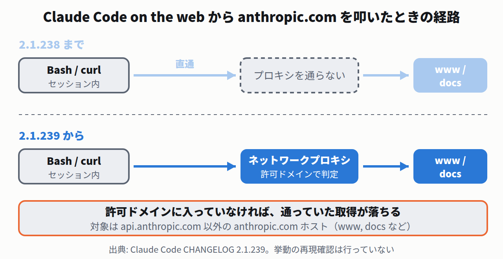

Claude Code on the web — Bashから anthropic.com を叩くとプロキシを通るようになった
Claude Code on the web は、ブラウザ側で動くClaude Codeです。作業はクラウド上のコンテナで行われ、そこからの外向き通信はネットワークプロキシが仲介します。環境ごとに「どのドメインへ出てよいか」を決めておく仕組みです。
2.1.239 で、そのプロキシを通る対象が広がりました。
CHANGELOG 2.1.239 の原文
Claude Code on the web: requests from Bash and other tools to non-API anthropic.com hosts (e.g. www, docs) now go through the session's network proxy, so your environment's allowed domains apply
これまで api.anthropic.com 以外の anthropic.com ホストは素通りしていました。今後は環境の許可ドメインの判定を受けます。許可リストに入っていなければ、昨日まで通っていた curl https://docs.anthropic.com/… が落ちます。

- 影響するのはクラウドセッションだけ。手元の端末で動かしている Claude Code には関係ありません。原文も「Claude Code on the web」と限定しています。
- 逆に言えば、環境のポリシーが効くようになったということ。許可ドメインを絞っている組織では、これまで判定を受けずに通っていた経路が塞がったことになります。
- 今やること。Claude Code on the web で anthropic.com のドキュメントを取得する手順を持っているなら、その環境の許可ドメインに
docs.anthropic.comなどが入っているか確認する。入っていなければ追加する。手元で動かしているだけなら対応は不要。
 AWS
AWS